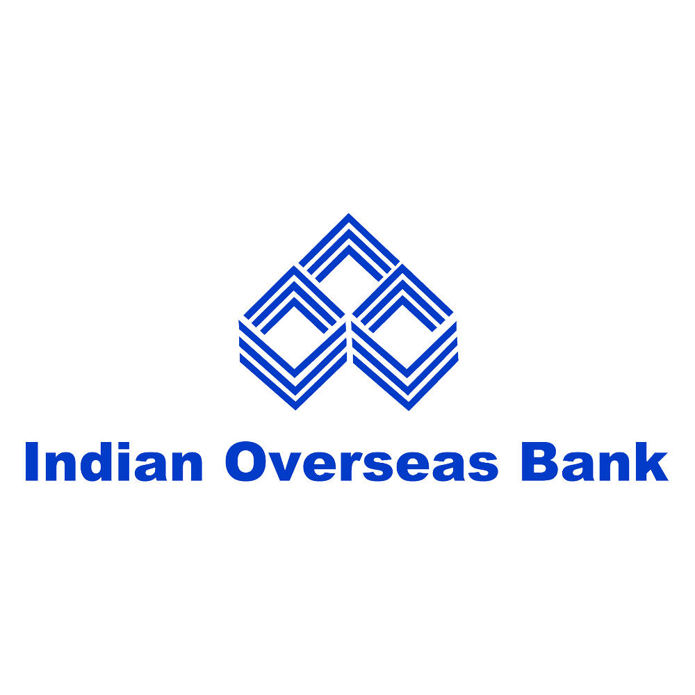

Indian O./css/versseas Bank
Indian Overseas Bank (IOB) is a major Indian nationalised bank. It is under the ownership of Ministry of Finance, Government of India based in Tamilnadu, India, with about 3,400 domestic branches, about 6 foreign branches and representative office. Founded in February 1937 by M. Ct. M. Chidambaram Chettyar with twin objectives of specialising in foreign exchange business and overseas banking, it has created various milestones in Indian Banking Sector. During the nationalisation, IOB was one of the 14 major banks taken over by the government of India. On 5 December 2021, IOB got Degidhan Award 2020-21 by Ministry of Electronics & Information Technology for achieving second highest percentage of digital payment transaction among public sector banks. As on 31 March 2021, IOB's total business stands at ₹379,885 crore (US$50 billion).
History
Pre-World War II In 1937, M. Ct. M. Chidambaram Chettyar established the Indian Overseas Bank to encourage overseas banking and foreign exchange operations. IOB started up simultaneously at three branches, one each in Karaikudi, Madras, and Rangoon (Yangon). It quickly opened a branch in Penang, Kuala Lumpur (1937 or 1938), and another in Singapore (1937 or 1941). The bank served the Nattukottai Chettiars, who were a mercantile class that at the time had spread from Chettinad in Tamil Nadu state to Ceylon (Sri Lanka), Burma (Myanmar), Malaya, Singapore, Java, Sumatra, and Saigon. As a result, from the beginning IOB specialised in foreign exchange and overseas banking (see below). Due to the war, IOB lost its branches in Rangoon and Penang, and Singapore, though the branch in Singapore resumed operations in 1942 under Japanese supervision.
Joint Ventures/Tie Ups
IOB entered into Non-Life Insurance Business with Universal Sompo General Insurance (USGI) Company Limited with equity participation of 19% along with Allahabad Bank, Karnataka Bank, and Dabur Investments. IOB was in tie-up with Apollo Munich Health Insurance to provide specialized health and personal accident products to its customers till May 2021. Now IOB is in tie up with Max Bhupa to provide specialized health and personal accident products to its customers from June 2021.